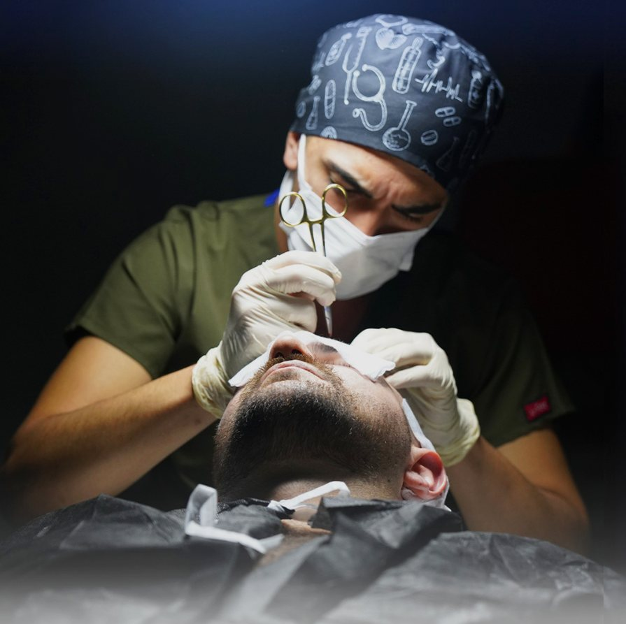

FUE Saç Ekimi
Greftler ense ve yanlardan tek tek alınır, ince kanallara yerleştirilir.
- Geniş açıklıklar için
- Tek seansta yüksek greft
- Safir uçla ince kanal
Ekimden önce doktorunuz yeni saç çizginizi alnınıza kalemle çizer, siz aynada onaylarsınız. Greft sayısı, yöntem ve fiyat bu çizgiye göre netleşir. Haritada evrenizi seçin, size ne kadar greft gerekebileceğini görün.
Doktor değerlendirmesi 24 saat içinde gelir. Ön görüşme ücretsizdir.
2.500–3.500 greft
Alın ve tepe birlikte açılmış. Genellikle tek seansta, 7–8 saatte tamamlanır.
Harita bilgilendirme amaçlıdır. Kesin greft sayısını donör bölgenizin yoğunluğu belirler; bunu ancak muayene ya da fotoğraf analizi gösterir.

Saç ekimi alanında deneyimli uzman
Saç çizgisini yüz yapınıza, yaşınıza ve donör bölgenizin kapasitesine göre kendisi tasarlar. İlk görüşmeden 12. ay kontrolüne kadar süreci bizzat takip eder.
#HairzenFarkıyla
Saç ekimi bir kez yapılır ve sonucu yıllarca taşınır. Bizi seçen danışanlarımızın en çok önem verdiği beş şey:
Operasyonlar hastane standartlarında hazırlanan ameliyathanede yapılır. Her hastada tek kullanımlık sarf malzemeleri ve yeniden sterilize edilmiş cerrahi setler kullanılır.
Saç çizgisini Doğukan Denli kendisi tasarlar. Greftlerin alınması ve yerleştirilmesi boyunca deneyimli ekibi her aşamada yanındadır.
5.000'i aşkın danışanımızın tavsiyeleri en büyük referansımız. Beklentilerinizi dinler, sonucu baştan sizinle birlikte planlarız.
Safir uçlar, Choi implanter kalemleri ve mikromotor sistemleriyle greftler daha az travmayla alınır ve yerleştirilir.
Operasyondan önce de sonra da aklınıza takılan her soru için günün her saati WhatsApp ve telefonla bize ulaşabilirsiniz.
Saç ekimi bir günde biter ama sonucu bir yılda görünür. Hangi ayda ne olacağını önceden bilen hasta, üçüncü aydaki dökülmeden korkmaz.
Lokal anestezi, 6–8 saat. Akşam otele dönersiniz.
İlk yıkama klinikte yapılır, bandaj çıkar.
Kabuklar dökülür, işe dönebilirsiniz.
Ekilen saçlar dökülür. Bu şok dökülmesidir ve beklenir; kökler yerinde kalır.
Yeni saçlar ince çıkar, giderek kalınlaşır.
Sonucun büyük kısmı görünür, saç şekil almaya başlar.
Son kontrol ve fotoğraflar. Tepe bölgesi 18. aya kadar gelişebilir.
Saç, sakal ve kadın saç ekiminde yönteminizi saç yapınıza, açıklığın büyüklüğüne ve beklentinize göre birlikte seçeriz.
Greftler ense ve yanlardan tek tek alınır, ince kanallara yerleştirilir.
Choi kalemiyle kanal açmadan, greftler doğrudan yerleştirilir.
Seyrek ya da boş sakal bölgeleri kendi köklerinizle doldurulur.
Seyrelen bölgeler, mevcut saçlara dokunmadan sıklaştırılır.
Hairzen Klinik saçlarınız için size en iyi hizmeti ve tedaviyi sunacaktır. Size uygun paketin güncel fiyatını analiz sonrası yazılı olarak iletiriz.
Paket içerikleri
Paket içerikleri
Paket içerikleri
Paket içerikleri
“Saç çizgisini yüzünüze, yaşınıza ve on yıl sonraki halinize göre çizerim. Bugün genç görünen ama 45 yaşında yapay duran bir çizgi istemem.”
Hairzen'de saç ekimi yaptıran ya da kontrollerine gelen danışanlarımızın kendi sözleriyle deneyimleri.
19.09.2023 tarihinde Hairzenclinic de saç ekimi yaptırdım. Gerçekten bu kadar profesyonel bu kadar güler yüzlü, ilgi ve alakalı başka bir ekip ve saç ekim merkezi daha olamaz, tek kelimeyle harikaydı. En başta Doğukan hoca’ya, Hatice hanım’a ilgi ve alakasından dolayı çok teşekkür ediyorum. Teşekkürler Hairzenclinic ailesi…
Saç ekimi yaptıran arkadaşımın 1. ay kontrolü ve PRP & Lazer uygulaması için onunla birlikte geldim. Çalışanlar gayet ilgili ve nazikti. Her işlemde bütün aşamaları en ince ayrıntısına kadar anlatıp öyle yaptılar. İlginize teşekkürler.
Saç ekim operasyonum öncesi çok hastane ve doktor araştırdım ve arkadaşlarımın önerisi ile Hairzenclinic ile tanıştım. Çok ilgili ve güler yüzlü bir ekiple karşılaştım. Operasyon öncesi, operasyon sırasında ve sonrasında çok ilgiliydiler. Operasyonum da çok sağlıklı geçti. Tekrardan tüm Hairzenclinic çalışanlarına ve Doğukan hocaya teşekkür ederim.
Saç ekimi deneyimimden 10 gün sonra, şunu gönül rahatlığıyla söyleyebilirim ki, bu klinik, bugüne kadar deneyimlediğim en üst düzey hizmeti sundu. Doğukan Bey ve ekibinin profesyonelliği ve el becerisi, süreci beklediğimden çok daha konforlu ve keyifli hale getirdi. Şimdiden sonuçlardan bağımsız memnunum ve bu yolda beni destekleyen herkese minnettarım. Saç ekimi düşünen herkese tavsiye ederim!
Saç ekimi sürecini, operasyon gününü ve sonrasını Doğukan Denli'yle birlikte danışanlarımızın kendi ağzından dinleyin.
Yalnızca lokal anestezi iğneleri sırasında birkaç dakika sızı hissedersiniz. Sonrasında işlem boyunca film izleyebilir, konuşabilir, öğle yemeği yiyebilirsiniz.
Greftler ense ve yanlardan alınır. Bu bölgedeki kökler dökülmeye neden olan hormona karşı dayanıklıdır, yeni yerinde de bu özelliğini korur. Ekim yapılmayan mevcut saçlarınız ise dökülmeye devam edebilir; bunun için ilaç ve PRP planı veririz.
Donör bölgesi zayıf olanlar, kontrolsüz diyabet ya da kalp hastalığı olanlar ve dökülmesi henüz durmamış çok genç hastalar. Fotoğraf analizinde uygun olmadığınızı görürsek bunu açıkça söyleriz.
Masa başı işlerde 3. gün dönebilirsiniz; şapka takmak 10. güne kadar önerilmez. Ağır spor ve yüzme için bir ay beklemek gerekir.
Evet. Kadın hastalarda çoğunlukla tıraşsız DHI ile, saç çizgisini indirme ya da ayrım yerini sıklaştırma uygulanır.
Dört açıdan çekilmiş fotoğraf yeterli: önden, tepeden, arkadan ve iki yandan biri. Doktorumuz greft sayınızı, uygun yöntemi ve yeni saç çizginizin taslağını 24 saat içinde size gönderir.